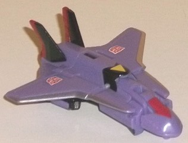
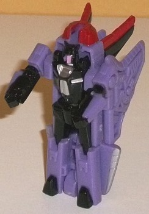
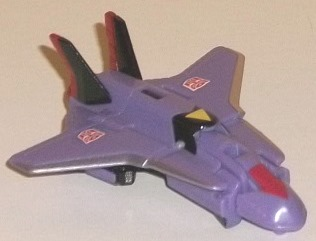
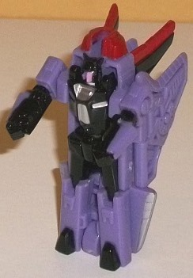
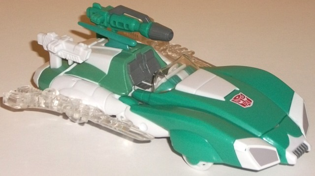
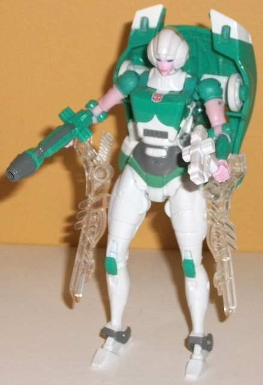

 
Difficulty of Transformations : Very Easy
Color Scheme : Lavender, glossy black, and some silver, glossy moderately dark red, pinkish purple, and yellow
Individual Rating : 6.3
(NOTE: Because this set consists of repaints,
this is not a full-blown review. This mainly covers any changes made to
the set and the color schemes. For a review of "Thrilling 30" Flanker--
the mold used for Quickslinger-- read the review of Swerve w/ Flanker
here
.
For a review on "Thrilling 30th" Arcee-- the mold used for Lifeline-- read
the review
here
.)
 Quickslinger
Quickslinger


Difficulty of Transformations
: Very
Easy
Color Scheme
: Lavender, glossy black,
and some silver, glossy moderately dark red, pinkish purple, and yellow
Individual Rating
: 6.3
Quickslinger was an original
character created back near the beginning of the Collectors' Club by Shawn
Tessman, who was mostly responsible for the BotCon customization classes.
In fact, in an early Collectors' Club magazine, there was instructions
on how to turn
Cybertron Ransack
into this
very character. Granted, this new version doesn't really share anything
in common with the original custom figure beyond the color scheme, but
it seemed to be another "thrown-in-at-last-minute" figure once it was discovered
this would be the last TFSS, so in that respect I don't mind it. It's not
like she's a long-established character, anyways. Now, regarding the color
scheme-- it's pretty darned good, though the lavender/purple plastic used
for most of the figure and the black paint used on the wings, central part
of the jet mode, and on the feet, upper legs, lower arms, and chest of
the robot mode fits a Decepticon a lot better than an Autobot, in my opinion.
Regardless, it's a darned good color combo, and the red used on the nosecone
and the rear thrusters and wings really pops against the lavender, too.
As far as less common colors, there's silver on the edge of the wings and
on the robot chest, a yellow triangle (hearkening back the original's mold
detailing) on the top center of the jet mode, and even a tiny bit of pinkish
purple on her little head. All great accent colors, the pinkish purple
in particular, as it helps highlight her head in robot mode and it contrasts
well against the black while also complementing the lavender plastic. It
all comes together very well and keeps either mode from looking remotely
boring.
No mold changes have
been made to Quickslinger; unfortunately, because of her 5mm weapon peg,
this means that Lifeline can't hold her, so she's better off partnering
up with another figure.
 Lifeline
Lifeline


Allegiance
: Autobot
Size
: Deluxe (packed with
Fractyl
w/ Scorponok
)
Difficulty of Transformation
: Medium
Color Scheme
: White, seafoam green,and
some dark glossy gray, clear plastic, pale red, dark blue, and light pale
purplish pink
Individual Rating
: 7.6
Lifeline is the name
given for the character traditionally just known by the descriptor "Paradron
Medic", which was always essentially a "Green Arcee" in the brief appearances
she's been in. Like Arcee, white is a main color in mostly the same spots
as on Arcee, with a bit more on the legs (which are unpainted except for
the kneecaps) and a bit less on the arms (which have green and a rather
nice shade of purplish pink used for the hands and portions of the upper
arms). The shade of green used, though, is spot-on accurate and a rather
"calming" shade, which fits Lifeline's role as a medic. It contrasts against
the white fairly well and the purplish pink extremely well, to the point
where I wish the latter was used more beyond just a few parts of the robot
mode. There's also a fair amount of dark glossy gray, used on the robot
stomach as well as on the seats, headlights, and parts of the larger of
her two guns. It's an okay shade, but doesn't really catch my eye. To cap
things off her windshield and swords are made of clear transparent plastic,
which honestly looks a bit plain-- I wish they were at least tinted one
color or another. Despite having a few extra paint apps on the arms, though,
overall Lifeline has fewer paint apps than Generations Arcee-- no black
line around the front vents, little on the robot legs... it's not what
I'd expect from a FunPub exclusive. Particularly since the head is painted
pretty much exactly like Arcee's, I wish they had done more to make her
more unique beyond "seafoam green instead of pink" and some other minor
changes. I understand that most of this is G1-accurate, and some may want
it only that way, but I personally wish a bit more had been added to make
Lifeline a bit more unique.
No mold changes have
been made to Lifeline.
Lifeline and Quickslinger
I'm of a mixed mind about. On the one hand, they both have pretty nice
paint apps (Quickslinger in particular), and getting a mainline toy of
a Paradron Medic has definitely been on a lot of Transfans' lists (though
not on mine, in particular, for reasons discussed above). However, both
molds are merely okay at best, and Quickslinger not being able to interact
with Lifeline at all despite them being "paired up" is a rather significant
oversight. I think overall this is the weakest release of the TFSS 5.0
figures.
Reviews by Beastbot